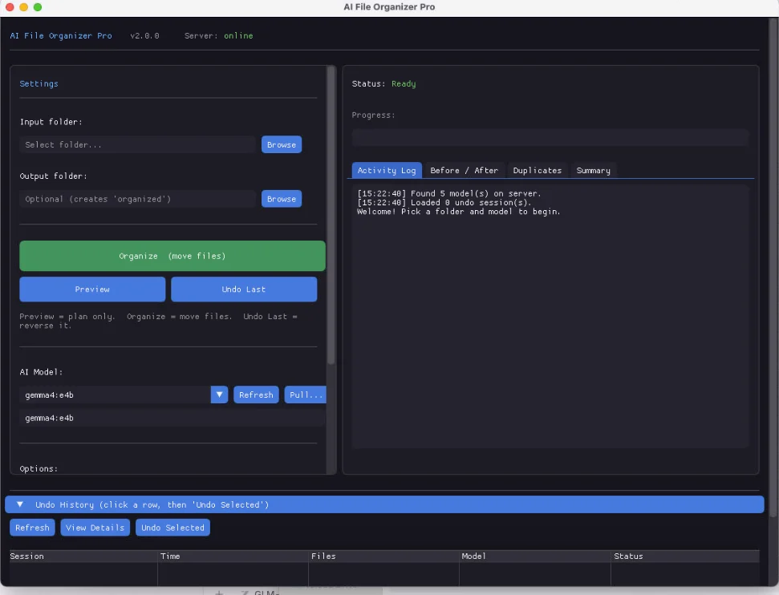

An AI file organizer that reads your files — and sorts them by what they actually are.
Most sorters look at file extensions. AI File Organizer Pro reads the content: an invoice lands in Work/Invoices/, vacation photos in Personal/Photos/, a Python project stays a project. The AI runs locally on your machine through Ollama — no cloud, no upload, no subscription. One click, with a full preview before anything moves.
Regular price $25.99 · lifetime updates · license for two computers · 7-day refund policy. Windows 10+ and macOS 11+ (Apple Silicon).
✓ 100% local — files never leave your machine
✓ Open-source models via Ollama (default: Gemma)
✓ No cloud upload, no subscription
✓ Works offline after initial setup
✓ Preview before organizing + one-click undo
AI File Organizer Pro is a desktop app for Windows and macOS that cleans up messy folders — Downloads, Desktop, Documents — by understanding file content and purpose, not just file types. It reads inside documents (PDF, DOCX, XLSX, and more), uses vision AI to categorize photos by what is actually in them, and recognizes code by language and project, keeping project folder structures intact.
The result is a clean structure you would have built yourself if you had the time: Work/Invoices separate from Personal/Photos, projects grouped sensibly, everything traceable back with a visual undo.
Built for anyone with a messy digital life:
8 GB RAM recommended; the AI model needs 5–20 GB of disk (one-time download, your choice of model).
Double-click the app (Windows .exe or macOS .dmg). It installs Ollama and downloads the AI model for you — one time. Paste your license key from the Gumroad receipt.
Use the visual folder browser — no paths to type. Select the mess: Downloads, Desktop, anywhere.
The Before/After tab shows exactly what will move where — file by file, before anything happens. Nothing moves until you approve it.
One click. Watch progress in real time with ETA and speed, see duplicates grouped in their own tab, and undo the whole run with one click if you change your mind.

A rule-based sorter puts invoice_march_2024.pdf into "PDFs", next to the vacation itinerary and the paper draft. Same extension, three different lives. That is why sorted-by-type folders still feel chaotic — the type was never the point.
This app reads the invoice and understands it is a business invoice — so it goes to Work/Invoices/. It looks at a photo and sorts by what is in it. It recognizes a Python project and keeps its structure intact. Content and purpose, like a human assistant would.
It is not locked to one AI. It works with any model in the Ollama library — hundreds, all free — and ships with Gemma as the default. You pick the size that fits your hardware.
Preview-first workflow, a dedicated duplicates tab, and one-click visual undo. A one-time SmartScreen/Gatekeeper prompt on first launch is normal for independent apps — Windows: "More info" → "Run anyway"; macOS: drag to Applications.
Buy once, download instantly, preview your first reorganization in minutes — with every file staying on your machine.
Get AI File Organizer Pro on Gumroad